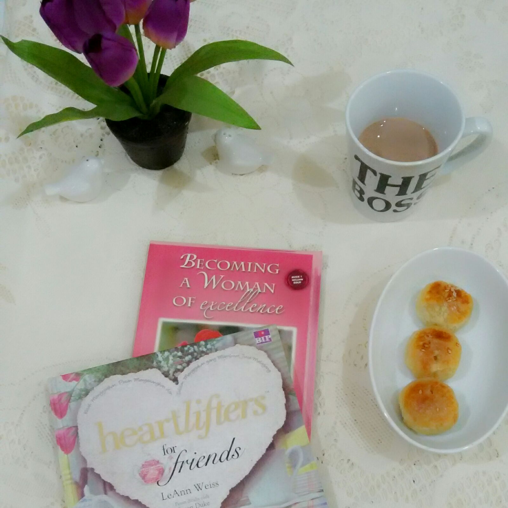
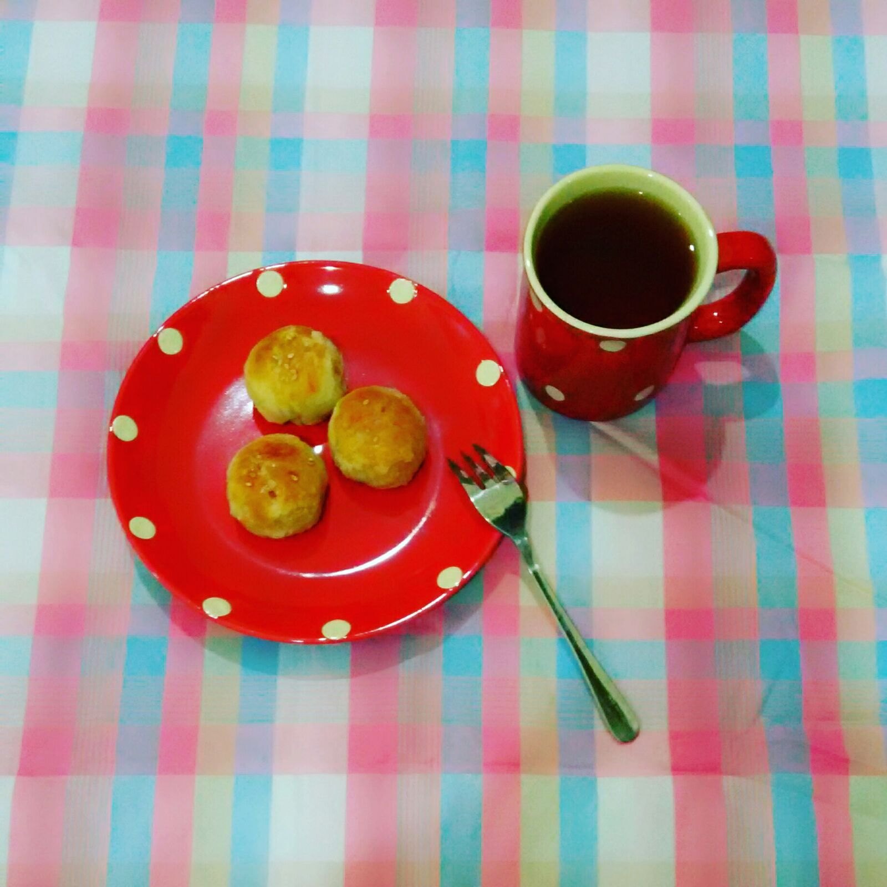

|
Singapore’s award-winning cupcakery has arrived! Twelve Cupcakes opened its doors in July 2011 in Singapore and has grown rapidly with overwhelming response from its passionate customers. The strong following is due to the brand promise to deliver only freshly baked cupcakes that are handmade from scratch every day. Coupled with the use of quality gourmet ingredients, Twelve Cupcakes does not cut corners in creating the perfect cupcake for the Asian palate. A Twelve Cupcakes' Cupcake is moist, fluffy and less sweet and has a light smooth frosting that tantalises the palate. Many satisfy their sweet-tooth cravings with these elegant-looking treats that are housed in their signature pink boxes. They are perfect for gatherings or just to give your day a sweet ending. Twelve Cupcakes is the best cupcakery in Singapore, having sold over 3 million cupcakes in such a short period of time. We are excited to bring our famous cupcakes to Indonesia and give everyone here an opportunity to taste the best cupcakes ever. Come visit us to find out why thousands of people across Singapore have given us their stamp of approval! Have you tried a Twelve Cupcakes' cupcake? |


|